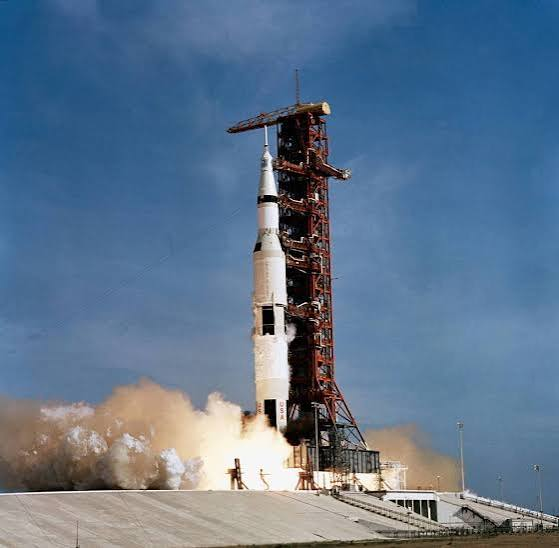
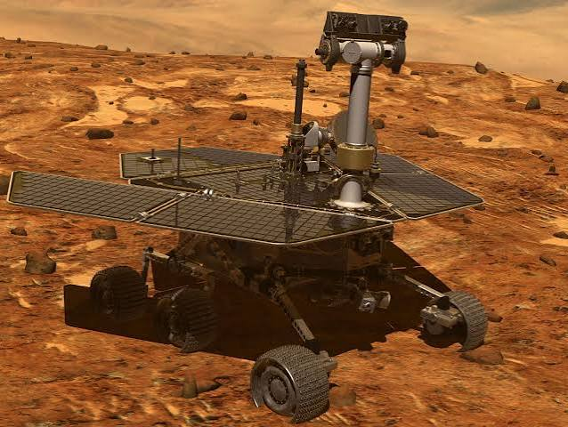
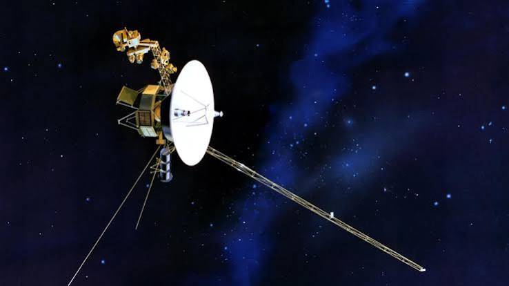

Exploración espacial
Por mucho tiempo la humanidad ah querido explorar el espacio y descubrir más allá del firmamento.

Cohetes
Hacen posible salir de la atmósfera. Funcionan por acción y reacción: expulsan gases hacia abajo y el cohete sube. Una de las misiones más importantes fue la del Apollo 11 de 1979 donde la humanidad Aterizó en la Luna

Rovers: Opportunity
Los rovers son vehiculos roboticos no tripulados, la mayoria de estos fueron a marte. Opportunity aterrizó en Marte en enero de 2004 y fue diseñado para durar solo 90 días marcianos. Funcionaba con paneles solares y duró casi 15 años, recorriendo unos 45 km. En 2018 una tormenta de polvo global tapó el Sol, perdió contacto con la Tierra y la NASA dio por terminada su misión en 2019.

Sondas: Voyager 1
Viajan sin tripulación a lugares donde aún no podemos ir. La Voyager 1, lanzada en 1977, ya salió del Sistema Solar y sigue enviando datos. En noviembre de 2026 será el primer objeto humano a un día-luz de la Tierra: una señal tarda 24 horas en llegar hasta ella.